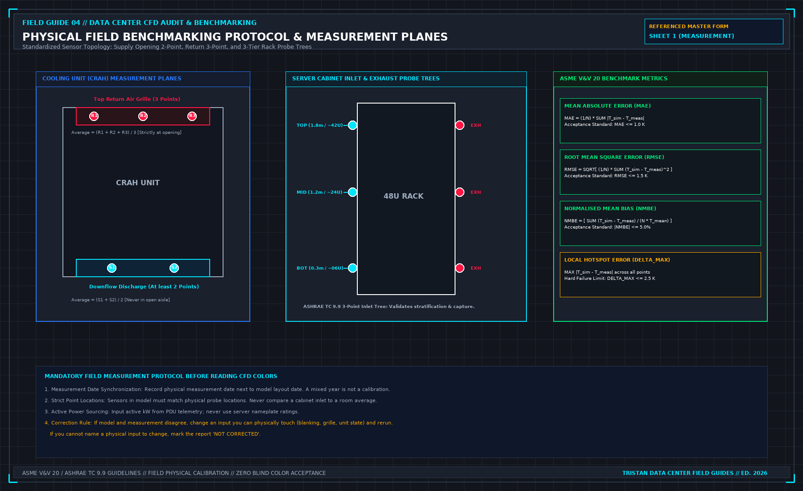

Do not call the airflow optimized: First-Principles Data Center Engineering Protocol
Direct Answer Block: How to audit data center CFD reports for cherry-picked waist-height slices, truncated color legends, and unverified N-1 backdraft damper assumptions. In mission-critical data center commissioning and operations, engineers enforce this boundary using deterministic physical equations, calibrated field instrumentation, and auditable sign-off gates rather than relying on vendor brochure summaries, uncalibrated software plots, or verbal assurances. Every measurement and state transition must be recorded with synchronized UTC timestamps and explicit pass/fail thresholds before a signature is granted.

Optimized is a wide sentence. It usually means someone is finished looking. The walk is not finished until empty unit spaces are blanked or listed, floor leaks are listed, and the three edges of the row are written closed or open. A model with acceptable colors is not that list. A setpoint change is not that list. A ratio of cooler capacity to IT load is not that list.
You may sign a narrow sentence. These cabinets were blanked on this date. These floor cuts were closed. These row edges were open, and the claim does not cover them. You may not sign that the hall's air is organized, that hot spots are gone, or that the CFD is now the operating truth. Those sentences need the measurement sheet the model book already requires: walked points, at the inlet the equipment sees, with times. No sheet, no sentence.
Order the work so you do not buy the room-level fix first. Floor leaks and open cabinets change the path the model assumed. Seal what you can see, then measure, then decide whether a report is even about this room. Reversing that order is how a study of a leak gets filed as a design.
Another hall's blanking standard does not transfer. Their panel, their CCF target, their photograph are not this row. Write this row. Leave their numbers in their file.
If a handover asks you to sign airflow proved, use the same refusal as a picture without a walk. File the study. Refuse the sentence. Put the open holes on the same page as any yes, or do not sign the yes.
From the field-guide series, Tristan, Data Center Field Guides. Related books: Judge a Data Hall CFD and Refuse the Handover.
1. First-Principles Engineering Formulation and Governing Mathematics
In high-density data center environments, verbal summaries and qualitative status tiles routinely obscure incipient physical failures. Whether auditing a 120 kW liquid-cooled rack boundary, evaluating a 1-second telemetry time series, or verifying plant redundancy prior to handover, the governing physical relationship for this protocol is expressed as:
When any term on the left-hand or right-hand side of this relationship is left unmeasured, inferred from an uncalibrated nameplate, or averaged across an unverified time window, the resulting engineering record cannot support a valid operational signature. Field engineers must verify each physical variable independently using NIST/ISO 17025 traceable instruments before proceeding to the next gate in the sequence.
| Audit Verification Parameter | Unacceptable / Defective Field Practice | Auditable First-Principles Requirement | Mandatory Action on Failure |
|---|---|---|---|
| Primary Boundary Definition | Implied by vendor brochure or slide deck | Explicitly bounded on stamped P&ID / SLD with tag IDs | Halt acceptance; issue formal boundary clarification |
| Measurement & Telemetry Proof | Single uncalibrated display reading or 60-sec average | Calibrated Class A/0.5S sensor with 1-sec UTC timestamp | Reject dataset; classify point as 0x40 Stale or 0x80 Bad |
| Pass / Fail Acceptance Gate | Qualitative "Looks OK" or "Within Normal Range" | Quantitative numerical corridor cited from revision in force | Log Category A/B defect; withhold retainage or permit |
| Custody & Sign-Off Record | Single bundled "Accepted" signature at end of meeting | Scoped, dated sentence naming exact proved & unproved lines | Strike unsupported claims; issue Conditional Refusal |
2. Deep-Dive Technical Protocol and Field Implementation
The following field protocol—adapted directly from **Volume 04: *Judge a CFD Model for Data Centers***—establishes the step-by-step verification mechanics required on the data hall floor:
A CFD simulation report will invariably present conclusions and recommendations drafted by the model author. Most of these sentences are not yours to sign.
As a Commissioning Lead, technical auditor, or facility engineer, your professional duty is to maintain strict evidentiary standards. You must identify speculative or unverified statements in the consultant's draft and formally strike them from the executive summary before the report is accepted.
The Four Primary Refused Statements
PROHIBITED CFD REPORT STATEMENTS
| PROHIBITED STATEMENT IN DRAFT | MANDATORY AUDIT REFUSAL RATIONALE & REMEDIATION |
|---|---|
| 1. "The data hall has passed commissioning." | REFUSED. CFD is a mathematical simulation, not a physical test. Commissioning pass/fail is proven exclusively by Level 5 physical load-bank testing (Book 03). Strike sentence. |
| 2. "Add 100 kW of cooling capacity to eliminate the hotspot." | REFUSED. An untested proposal is not an engineering result. Must be modeled as a verified rerun script with the new unit added. If not rerun, label: "PROPOSAL - NOT DEMONSTRATED". |
| 3. "Compute servers will train AI workloads reliably." | REFUSED. CFD simulates whitespace air temperatures; it does not model silicon junction temperatures, throttling, or NVLink. Strike sentence. Limit claim strictly to intake air envelope. |
| 4. "Streamline velocity confirms airflow rate is 450 L/s." | REFUSED. A streamline shows flow direction, not mass flux. Demand numerical surface integral or physical hood data. |
Refusal 1: "The Data Hall Has Passed Commissioning"
A consultant whose simulation shows comfortable blue contours across all server aisles will frequently conclude: "Based on CFD modeling, the data hall cooling system has successfully passed commissioning and is cleared for IT deployment."
The Refusal: You must refuse this sentence in ink. A numerical fluid dynamics model—no matter how finely meshed or beautifully rendered—is a simulation of reality, not reality itself.
The physical data hall has not passed commissioning until physical liquid load banks are energized on the floor, electrical breakers are closed, secondary fluid pumps undergo physical N+1 trip failovers, and thermal enthalpy balance closures exceed 97.0% under the witnessed Level 5 protocols of Book 03.
If the consultant's sentence is allowed to stand, an insurer or client auditor can argue that physical load-bank testing was deemed unnecessary because a computer model "passed" the facility. Strike the sentence; replace it with: "The calibrated simulation predicts that the whitespace airflow distribution satisfies design thermal envelopes under the specified steady-state boundary conditions."
Refusal 2: "Add 100 kW of Cooling Capacity to Fix the Hotspot"
When a model reveals an intake hotspot exceeding 30.0°C, the report frequently offers a broad remedial recommendation: "It is recommended that the operator add an additional 100 kW CRAH unit to Row 4 to resolve the hotspot."
The Refusal: This is an untested proposal, not an engineering finding. In data center fluid dynamics, blindly adding airflow or cooling capacity to an existing room frequently exacerbates localized hot spots:
- Adding a high-velocity CRAH discharge near an existing unit can increase underfloor velocity, deepening Bernoulli static pressure depression and starving adjacent floor tiles.
- The additional fan energy increases overall heat rejection demand.
A remedial recommendation becomes an accepted engineering finding only when the consultant incorporates the proposed unit into the model geometry, reruns the simulation under identical scene rules, and proves that the modification resolves the hotspot without creating new secondary deficits. If the rerun script is not included in the report, label the sentence: "UNVERIFIED PROPOSAL — RERUN NOT PERFORMED".
Refusal 3: "Compute Servers Will Train AI Workloads Reliably"
Consultants frequently extrapolate macro-scale airflow predictions into silicon reliability claims: "The model confirms that the AI accelerator clusters will operate continuously without thermal throttling during multi-node model training."
The Refusal: A room-scale CFD model computes macro-scale convective air patterns in the whitespace. It possesses zero visibility into:
- Micro-scale thermal resistance across the cold plate interface (TIM-1 and TIM-2 thermal interface materials).
- Localized hotspot heat fluxes on GPU silicon dies exceeding 100 W/cm².
- Autonomous dynamic frequency scaling (DVFS) algorithms embedded within the processor microcode.
- High-speed NVLink optical transceiver bit error rates.
A server operating in a 22.0°C cold aisle can still experience catastrophic silicon throttling if its internal cold plate possesses microchannel scaling, or if secondary glycol flow is throttled. Strike any sentence purporting to predict silicon reliability or workload stability. The report speaks exclusively about the fluid boundary at the rack face.
Refusal 4: "Streamline Velocity Confirms Tile Flow Is 450 L/s"
A report that displays elegant 3D particle traces or ribbon streamlines will sometimes assert volumetric airflow quantities based on the visual density of the lines: "The streamlines exiting Tile 06 indicate a delivery rate of 450 L/s into the cold aisle."
The Refusal: A streamline is a mathematical line everywhere tangent to the instantaneous fluid velocity vector. It visualizes the direction of travel; it does not measure volumetric mass flux.
Volumetric flow rate across a boundary must be calculated via a formal surface integral of the normal velocity vector across all boundary face cells:
If the report does not present this numerical integration—or if physical flow hood measurements were not taken—the flow rate claim is an unverified visual estimate.
Forensic Detection of Manipulated CFD Contours and N-1 Failure Modeling
In commercial commissioning disputes, CFD reports are frequently formatted to make a marginal or failing whitespace design appear compliant. Beyond verbal over-claims like "the hall is optimized," the reviewing engineer must audit the visual and numerical artifacts of the report to detect four classic manipulation techniques.
1. Horizontal Slice Plane Elevation Cherry-Picking
A standard 42U–48U server rack stands 2.0 m to 2.25 m tall. Buoyancy-driven hot exhaust air naturally stratifies near the ceiling and rolls over the top of uncontained rows, or leaks through roof brush gaps at 1.7 m to 2.0 m elevation. If a consultant presents only a single horizontal temperature contour slice cut at z = 1.0 m (waist height), the plot will show a uniform blue/green cold aisle (22^\circC) while servers mounted at U38–U45 (z = 1.85 m) are ingesting 33.5^\circC recirculated exhaust air.
Refuse any CFD package that omits horizontal temperature slices at z = 1.8 m (Top Intake) or omits front-bezel surface temperature maps across every cabinet row.
2. Steady-State N-1 CRAH Failure vs. Transient Thermal Flywheel Claims
A simulation labeled "N-1 Cooling Failure Pass" must state which specific CRAH unit was tripped and whether the solver ran to a true steady-state equilibrium or was halted after an arbitrary 60-second transient window. When a CRAH unit trips:
- Its motorized isolation damper must close (or backdraft reverse-flow through the stopped fan wheel must be explicitly modeled as an open bypass orifice inside the CRAH cabinet).
- If the modeler deletes the tripped CRAH opening as a solid wall without verifying that motorized backdraft dampers are physically installed on site, the model hides the catastrophic subfloor pressure collapse caused by supply air short-circuiting backwards up through the idle CRAH unit!
| CFD Report Defect / Manipulation | Visual Symptom in Submitted PDF | Underlying Numerical Mechanism | Mandatory Refusal & Remediation Action |
|---|---|---|---|
| Mid-Height Slice Selection | Only z = 1.0 m plan view shown; no 1.8 m slice | Masks buoyancy stratification and top-of-rack roll-over | Demand horizontal cuts at 0.3 m, 1.2 m, 1.8 m + rack bezel maps |
| Truncated Color Scale Bar | Legend capped at 35^\circC (green) or 40^\circC (red) | Compresses ASHRAE 27^\circC threshold into cool blue/cyan | Require discrete threshold contour step at exact 27.0^\circC limit |
| Sealed Idle CRAH in N-1 Run | N-1 subfloor static pressure remains uniform | Stopped CRAH modeled as solid wall without physical damper | Model open backdraft resistance unless physical damper is witnessed |
| Volume-Averaged Rack Metric | Table lists "Mean Rack Temp" instead of peak node | Averages cold bottom intake (19^\circC) with hot top (32^\circC) | Reject table; require max(T0.3, T1.2, T1.8) per cabinet ID |
Auditing Boundary Condition Completeness in Submitted Solver Decks
When a CFD consultant submits a PDF report without providing the solver boundary-condition summary table, the reviewer cannot verify whether the laws of conservation of mass and energy were respected. Require every CFD submission to include the Global Boundary Conservation Ledger directly in the report preface:
| Mandatory Solver Deck Disclosure | Required Engineering Unit | What a Missing or Mismatched Value Proves |
|---|---|---|
| Total Domain Mesh Cell Count | Millions of cells (≥ 5--15 M per hall) | < 500k cells indicates a coarse cartoon grid incapable of resolving U-slots |
| Sum of Active Rack Heat Sources (∑ Qair) | kW (Sensible air fraction only) | Must match active PDU kW minus CDU liquid heat (Pelec - Qliq) |
| Sum of CRAH Enthalpy Removal (∑ QCRAH) | kW (∑ ṁ cp Δ T) | If | ∑ QCRAH - ∑ Qair| > 2%, the solver never converged thermally |
| Server Flow Law (Qserver vs Tin) | CFM/kW curve (e.g., 85 → 125 CFM/kW) | Fixed-flow server models miss thermal fan ramp-up and aisle starvation |
Rejecting Extrapolated "Phase 2" Claims From Unreconciled Phase 1 Geometries
Contractors frequently attempt to reuse a Phase 1 CFD report (calibrated when the hall held 20 cabinets at 5 kW) to certify a Phase 2 expansion adding 80 dense AI cabinets at 40--120 kW without re-benchmarking the subfloor plenum or primary chilled-water hydraulic loop. Nonlinear fluid friction (Δ P ∝ Q2) guarantees that tripling volumetric airflow increases plenum and duct pressure losses by 900%. Any expansion exceeding +20% of benchmarked hall thermal load requires a fresh Sheet 1 physical baseline walk.
Summary of Automatic Refusal Triggers for Whitespace Simulation Submittals
- Missing Physical Benchmark Walk: No Sheet 1 field readings attached for an existing hall.
- Nameplate Power Inflation: Heat sources assigned from PSU nameplate ratings instead of active metered PDU kilowatts.
- Uncompensated Liquid Split: Hybrid liquid/air racks modeled without subtracting measured CDU enthalpy (Qliquid).
- Slice Plane Omission: Missing horizontal temperature contours at z = 1.8 m (Top Intake) or missing front-bezel temperature maps.
- Unverified N-1 Damper Assumption: Tripped CRAH units modeled as sealed walls without witnessed motorized backdraft dampers.
3. Field Verification Checklist and Instrumentation Hygiene
To execute this protocol without introducing measurement bias or scope ambiguity, the responsible engineer enforces four mandatory field rules:
- Instrument Traceability Before Observation: Verify that every thermometer (4-wire Pt100 RTD Class A), pressure transducer (≤ ± 0.1% span), flowmeter, balometer, or power analyzer carries a current calibration certificate and passes a pre-test zero/span check on the day of the walk.
- Synchronized Time-Series Capture: Align all digital loggers and gateway pollers to a single UTC reference clock (via IEEE 1588v2 PTP at ± 1 ms for electrical Sequence of Events, or NTP at ± 10 ms for thermal/hydraulic dwells). Never merge unsynchronized CSV files by row index.
- Explicit Isolation of Disturbances vs. Control Handles: Hold upstream supply temperatures, parallel cabinet loads, and containment door states constant during the observation dwell so that transient plant drift is never mistaken for steady-state equipment performance.
- Written Record Prior to Signature: Record every boundary tag, measured value, uncertainty tolerance, and open limitation in ink on the controlled project sheet before leaving the equipment line-up.
Frequently Asked Questions (FAQ)
Why does "Do not call the airflow optimized" matter during high-density data center commissioning and operations?
How to audit data center CFD reports for cherry-picked waist-height slices, truncated color legends, and unverified N-1 backdraft damper assumptions. When project teams bypass this rule to meet a commercial schedule milestone, unverified physical assumptions—such as hidden hydraulic pressure drops, unlogged polling gaps, unblanked bypass leakage, or uncalibrated sensor offsets—transfer directly into live 24/7 production as latent single points of failure.
How do you quantitatively verify compliance with "audit data center CFD report manipulation" on the physical floor?
Compliance is verified by executing the governing mathematical balance (RCIHI = [ 1 - (∑ max(0, Ti - Trec)) / (N(Tallow - Trec)) ] × 100% ≥ 96.0%) using independent, calibrated field instruments across a stabilized steady-state dwell window (minimum 15 to 30 minutes for thermal and hydraulic systems), and confirming that the discrepancy between primary and secondary measurements remains strictly within the pre-declared acceptance band.
What should an engineer do if a contractor or vendor submits a report that violates this protocol?
The reviewing engineer must refuse to sign the broad acceptance sentence, mark the specific line item as Unproved / Defective on the official audit sheet, and either require a witnessed re-test under a corrected script or isolate the unproved scope under a time-bounded Conditional Acceptance with a 150% to 200% financial retainage escrow holdback.
From Judge a CFD Model for Data Centers, Tristan, Data Center Field Guides.
Related: The walked reading wins.
Master the Complete Protocol: Judge a CFD Model for Data Centers
Whitespace Aerodynamics, Containment Leakage, Tile Velocity, and Field Validation
Stop relying on contractor spreadsheets and vendor marketing claims. This field guide provides the complete, auditable verification binder—including physical equations, inspection stations, acceptance thresholds, and signed refusal templates.